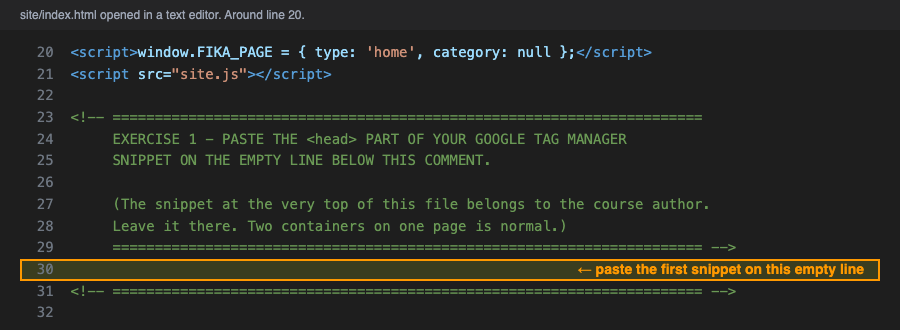
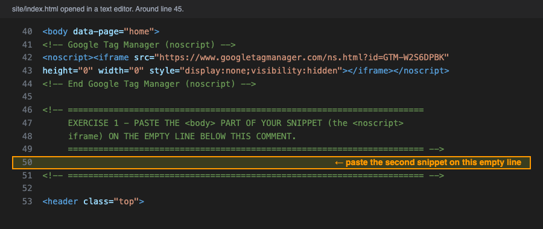
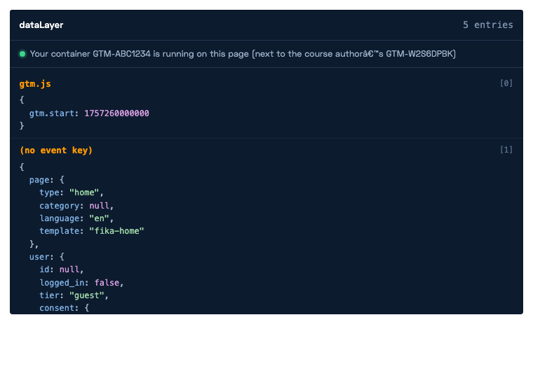

Put Tag Manager on the shop
What you will do
Tag Manager can only work on a page that contains its snippet. Right now the practice shop does not contain yours. You will copy the snippet from Tag Manager and paste it into the five pages of the shop. Then you will use Tag Manager's test tool, Preview mode, to check that it works.
You need a text editor for this. On Windows, Notepad works. On a Mac, use TextEdit, but first open TextEdit's settings and choose Plain text. Do not use Word.
Step 1 Copy the snippet from Tag Manager
Open tagmanager.google.com and open your container.
Click Admin in the menu at the top of the page.
You see two columns. In the right column, called Container, click Install Google Tag Manager.
A page with two grey boxes of code opens. The first box is for the
<head>of the page. The second box is for the<body>. Keep this tab open. You will copy from it twice per file.
Step 2 Paste it into the home page
On your computer, open the folder
gtm-real-site, then the foldersiteinside it. Open the fileindex.htmlin your text editor. (Right-click the file, choose Open with, and pick the editor.)Scroll down a little. Around line 23 there is a comment that says EXERCISE 1 - PASTE THE <head> PART. Below it is an empty line, marked in the picture.

The first place to paste. Click on the empty line marked in orange. Click the picture to see it full size. Go back to the Tag Manager tab. Click the copy icon next to the first grey box. Go back to the editor, click on that empty line, and paste.
Scroll down a little more. Just after the line that starts with
<bodythere is a second comment that says EXERCISE 1 - PASTE THE <body> PART. Below it is another empty line.
The second place to paste. Click on the empty line marked in orange. Click the picture to see it full size. Go back to the Tag Manager tab. Click the copy icon next to the second grey box. Go back to the editor, click on that empty line, and paste.
Save the file.
There is already some Tag Manager code at the top of the file. Leave it.
The code at the very top of each page, with the ID GTM-W2S6DPBK, belongs to the person who
made this course. It stays there. Your snippet goes in the two marked places below it. Two containers
on the same page is normal; many companies have one of their own and one from an agency.
Step 3 Do the same in the other four pages
The shop has five pages, and each one is a separate file. Tag Manager only works on the pages that contain
the snippet, so you have to paste it into all five. The other four files are in the same
site folder:
Open
products.html. Paste the first box on the empty line under the first EXERCISE 1 comment, and the second box on the empty line under the second EXERCISE 1 comment. Save.Do exactly the same in
product.html.Do exactly the same in
checkout.html.Do exactly the same in
signup.html.
On a real website you would only do this once, because a real website has one template that all pages share. The practice shop is made of five separate files so that you can see the code.
Step 4 Upload the five files again
Go to github.com and open your repository
yourname.github.io.Click the folder
gtm-real-site, then the foldersite.Click Add file, then Upload files. Drag the five files you edited into the browser window. Click Commit changes. GitHub replaces the old copies.
Wait two minutes. Then open the shop's home page at
https://yourname.github.io/gtm-real-site/site/index.html.Scroll to the very bottom of the page. Click the grey line that says Developer view. A black panel opens. The second line of the panel should now say Your container GTM-… is running on this page.

The Developer view after a correct install. The green dot and the line that names your container are what you are looking for. Click the picture to see it full size.
Step 5 Test with Preview mode
Preview mode is Tag Manager's test tool. It opens your site in a new window and shows you, page by page, what Tag Manager sees and which tags run. You will use it in every exercise from now on.
Go back to tagmanager.google.com. At the top right, click the button Preview.
A new tab opens called Tag Assistant. In the field Your website's URL, paste the address of the shop's home page. Click Connect.
Another new window opens with the shop in it. In the bottom right corner of that window there is a small box saying Tag Assistant Connected. Leave that window open.
Go back to the Tag Assistant tab. On the left there is a list. It shows the page you opened, and under it four events: Container Loaded, Initialization, DOM Ready and Window Loaded. This means Tag Manager is working on the page.
Go to the shop window and click Coffees in the menu at the top. Go back to the Tag Assistant tab. A second page has appeared in the list on the left. Do this for all five pages of the shop.
What you should see
- The Developer view on every shop page says your container is running.
- In Tag Assistant, all five pages appear in the list on the left, each with Container Loaded under it.
- When you click on Container Loaded, you see your tag
Google tag - GA4under Tags Fired. It is the only tag so far.
If it does not work
- The Developer view says your container is not on this page yet. Either the file did not upload, or your browser is showing the old copy. Reload the page with Ctrl + Shift + R (Windows) or Cmd + Shift + R (Mac). Then check on GitHub that the file changed.
- The page looks broken after pasting. The snippet was pasted in the wrong place. Delete what you pasted and try again. It goes on the empty line between the two comment lines, nowhere else.
- Tag Assistant says it cannot connect. The address must start with
https://and the page must be online. It will not work with a file opened from your computer. - One page is missing from the list in Tag Assistant. That file did not get the snippet. Go back to step 3.
install google tag manager snippet,
tag assistant preview mode not connecting.
The practice shop
The exercises happen on these five pages. Each link opens in a new tab.
- 1Home pagecta_click, login
- 2All coffeesview_item_list, select_item
- 3One coffeeview_item, add_to_cart
- 4Checkoutbegin_checkout, purchase
- 5Subscribe formgenerate_lead
At the bottom of every shop page there is a grey line that says Developer view. Click it to see the dataLayer and which containers are running.